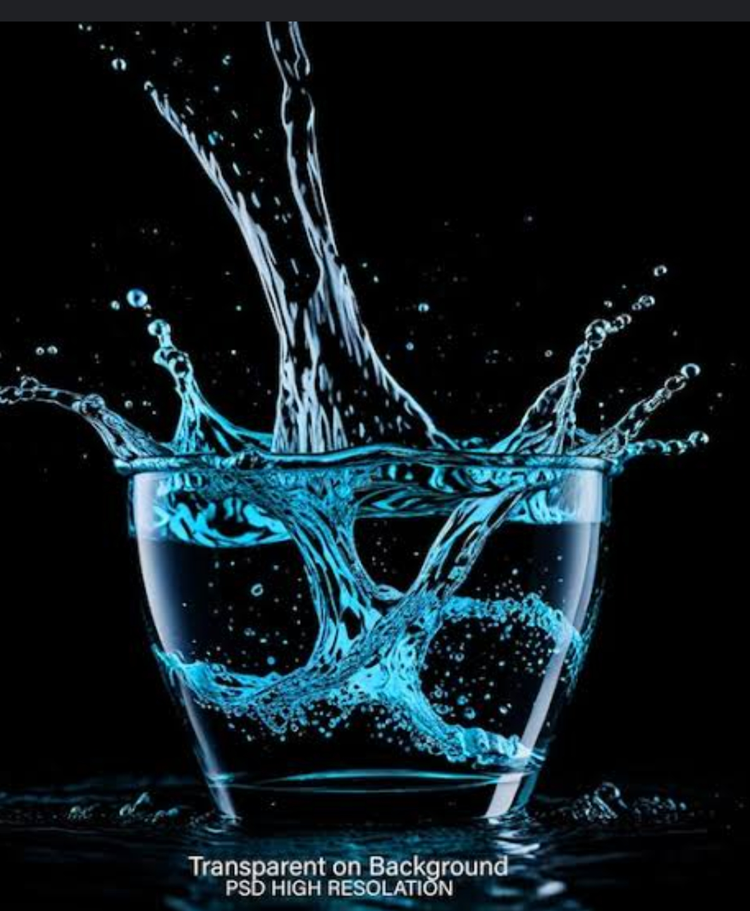
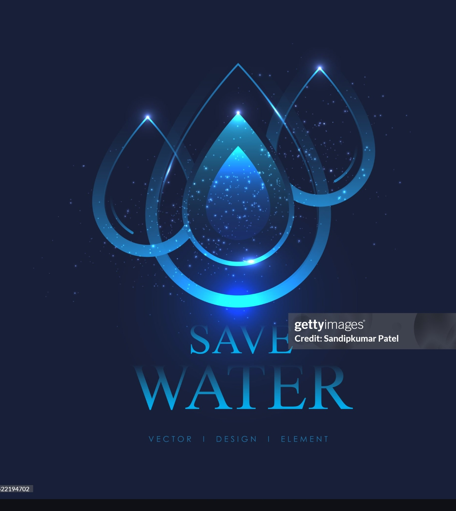
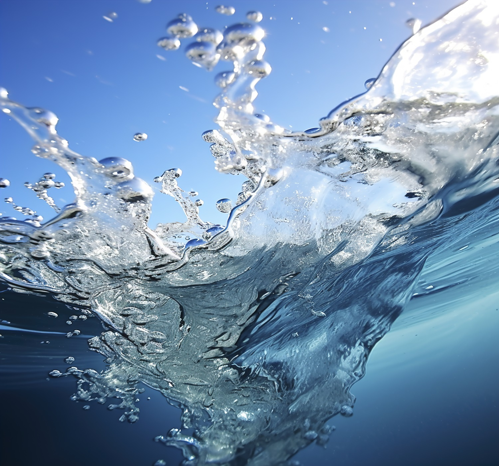

RO Water Specialists
for homes & businesses.

Our mission is to deliver clean, safe, and great-tasting water to every home and business we serve. Through advanced RO technology and reliable service, we provide tailored water treatment solutions that protect health, support sustainability, and bring peace of mind to families and confidence to businesses.
Pure Water. Trusted Solutions.
Where Health Meets Reliability.
Access to clean and safe drinking water is essential for every household. In India, where water quality
can vary widely due to dissolved salts, contaminants, and seasonal changes,
Reverse Osmosis (RO) water purifiers have become the trusted solution for ensuring pure, healthy water.
Choosing the right RO system means you can confidently provide your family with water that is free from contaminants,
tastes fresh, and supports long-term health.
Modern RO purifiers for Indian homes often feature:
* TDS control: Ensures the right balance of minerals
* Energy-efficient operation: Low power consumption to suit every household.
* Smart features: Indicators for filter replacement, water level, and purification status
Clean Water Solutions for all.

Nothing matters more than the health and safety of your loved ones. With water quality varying across cities and seasons,
an RO water purifier ensures the water you drink is safe, clean, and fresh.
It removes impurities like chemicals, bacteria, and heavy metals, while keeping essential minerals intact.
Our home RO systems are easy to use, fit perfectly in your kitchen, and come with smart features like filter replacement alerts and TDS control, so you always know your water is healthy.
They’re also energy-efficient, making them perfect for daily use.
Give your family the gift of pure, great-tasting water, and enjoy peace of mind with every sip.
Industrial & Commercial RO Installations.

We specialize in designing and installing large-scale reverse osmosis systems tailored to meet the demanding water requirements of commercial and industrial enterprises across India.
Our industrial RO plants range from 500 LPH to 50,000+ LPH capacity, serving diverse sectors including hospitals, hotels, restaurants, schools, manufacturing units, pharmaceutical companies, and food processing facilities.
Our commercial installations feature robust pre-treatment systems to handle varying raw water conditions, multi-stage RO membranes for maximum efficiency, and automated control panels for seamless operation.
Each system is custom-engineered based on detailed water analysis, daily consumption requirements, and specific industry standards.